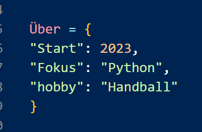

Wirtschaftsmittelschule Baden
Ich besuche die Wirtschaftsmittelschule an der Kantonsschule Baden. Nebenbei programmiere ich seit 2023 als Hobby und spiele in meiner Freizeit Handball.

Über mich
Mich interessiert vor allem das Programmieren kleiner Tools, die den Alltag erleichtern. Im Jahr 2023 habe ich mit HTML, CSS und JavaScript angefangen. Mittlerweile arbeite ich hauptsächlich mit Python und WordPress an eigenen kleinen Projekten, die mir Spass machen.
Ich arbeite daneben an eigenen Projekten und begleite praktische Aufgaben rund um Webentwicklung, digitale Tools und kleine Marketing-Tätigkeiten.
Womit ich arbeite
Projekte
Lebenslauf
Sprachen